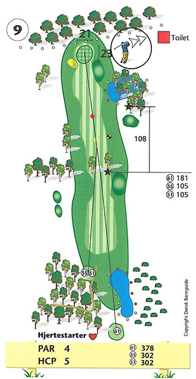
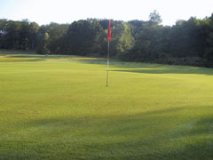

<div class="pages">
  <div data-page="hul9" class="page navbar-fixed toolbar-fixed" >
    <div class="navbar">
      <div class="navbar-inner">
        <div class="left">
          <a href="#" class="link back icon-only"><i class="icon icon-back"></i></a>
          <!-- <a href="#" class="back link icon-only"><i class="icon icon-back"></i></a> -->
        </div>
        <div class="center">Hul 9</div>
        <!-- <div class="right"></div> -->
        <div class="right">
        </div>
      </div>
    </div>
    <div class="page-content" style="padding-top:45px;">
       <div class="content-block">
          <center></center>
          <p>9. hul er tredje hul i Perlerækken og et af banens sværeste. Et langt par 4 hul med udfordringer fra tee til green. Umiddelbart foran tee-stedet skal en sø passeres og udslaget skal være uhyre præcist, eller meget langt, for at undgå beplantning i begge sider af fairway.</p>
          <center></center>
          <p>Desuden er fairway i 189 meters afstand fra tee kun 4 meter bred! Hvis du ikke kommer forbi beplantningen, er det en god ide at spille bolden sikkert frem på fairway. Ved indspillet til den højtliggende green lurer adskillige farer.</p>
          <p>Til venstre for fairway rough-beklædte hulninger og en bunker umiddelbart inden green. Til højre en stor vandhazard med tilhørende skrånende fairway samt en stor græsbeklædt knold umiddelbart før green. Herudover er der out of bounds kun 5 meter bag green. Den relativt lille green skråner ikke meget og er designet med en lang række "ujævnheder", som giver mulighed for virkelig drilske flagplaceringer.</p>
          <p>For lav-handicapperen er det absolut nødvendigt med et langt præcist drive og pas på ikke at slå for langt i indspillet, især når der er medvind.</p>
          <p>Hulsponsor: <br />
          -LEDIGT-<br /><br />
          Bænksponsor:<br />
           -LEDIGT-
          </p>
        </div>
    </div>
    </div>
    </div>
  </div>
</div>
